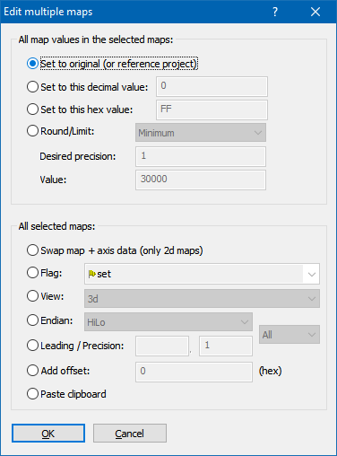

You can start this dialog by right-clicking a selection of maps (all in the same project) in the map sidebar.
It allows you to perform various functions that you would normally do on each map individually, on all selected maps in one go.
The following actions are available:
| · | Round the values or limit them to a minimum/maximum. |
| · | Swap the maps (mirror them by a diagonal axis) |
| · | Change the flag status (first column in the map sidebar) |
| · | Set the view mode (Text/2d/3d) |
| · | Set the Endian (HiLo or LoHi) |
| · | Set Leading / Precision
If the fields are empty, the respective fields in the map will not be changed. If you want to change the fields to empty (=automatic mode), enter only a minus character ("-"). |
| · | Paste the current clipboard contents onto the map |

Shortcuts